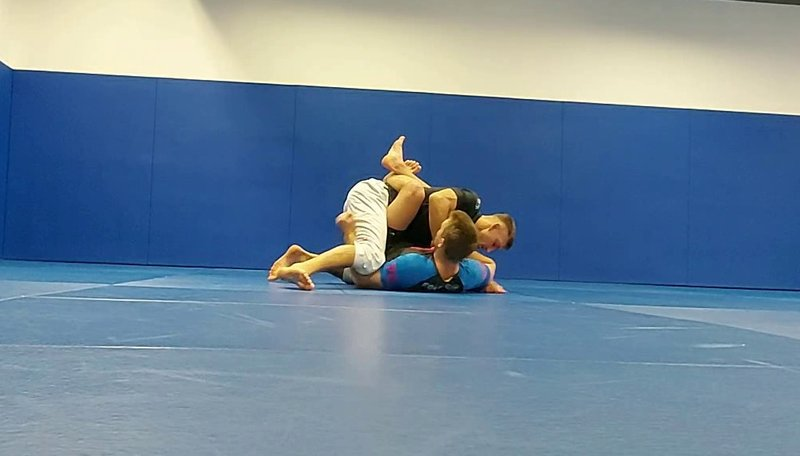
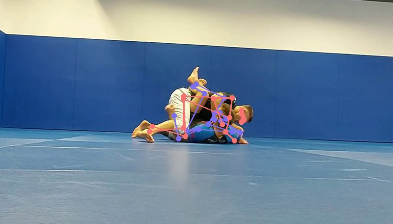
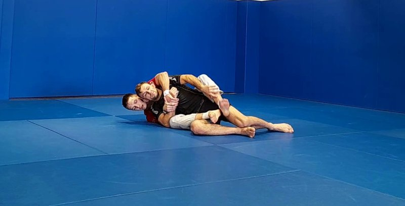
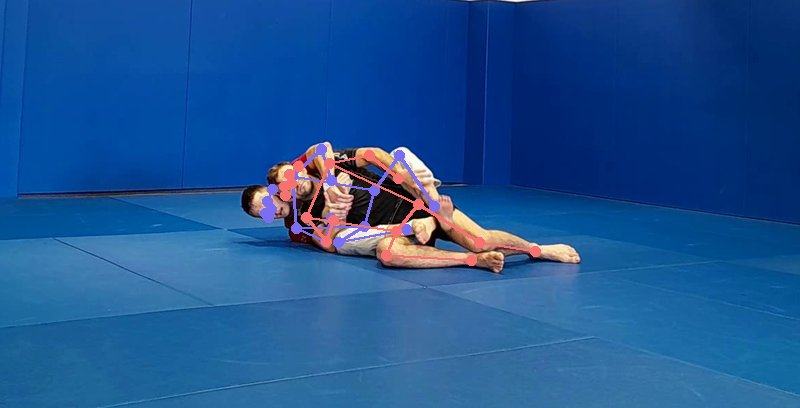

Positions are symbols. Connections are algebra. Videos become notation.


“Bottom player wraps both legs around the opponent’s torso and locks the feet.”
CGRD := { ¬Z0(Op.Ba) CON(Me.Le+, Op.To, d1, −) CON(Me.Le−, Op.To, d2, +) CON(Me.Fo−, Me.Fo+, d3, 0) }
Two legs control the torso. Feet form a closed loop.


“Control from behind. Legs wrap the torso. Feet do not cross.”
BCTR := { FacingAligned ¬Z0(Op.Ba) CON(Me.Le+, Op.To, d1, −) CON(Me.Le−, Op.To, d2, +) ¬CON(Me.Fo−, Me.Fo+) }
Same leg control on the torso. Different topology: no loop.
CGRD and BCTR share the same connections. They differ by one constraint:
CON(Me.Fo−, Me.Fo+, d3, 0) — feet locked — vs ¬CON(Me.Fo−, Me.Fo+) — feet open.
One line of algebra distinguishes two entirely different positions.
You just saw structure emerge from a single frame.
A language can describe.
The right language makes new things possible.
Roman numerals could represent numbers.
Arabic numerals made calculation possible.
BlawkOps does the same for Jiu-Jitsu.
Jiu-Jitsu can be approached through sequences of moves.
Each technique is learned individually.
Structure adds a layer underneath.
Techniques can be organised through invariants.
Knowledge transfers across positions.
This is an extension, a new layer that makes existing knowledge more powerful.
In logographic writing systems, symbols represent meaning directly. Instead of building meaning from sequences, structure defines meaning.
Jiu-Jitsu works the same way.
A person leaning against a tree. Rest.
Meaning emerges from structure. Strokes are production details. Radicals carry meaning.
Characters share radicals.
You can read new words by recognising their structure.
Positions share invariants.
You can understand new positions by recognising their radicals.
This is how fluency emerges.
Lose a radical, lose the position.
Strokes matter for efficiency. Not for identity.
Radicals define the position.
Strokes define how efficiently you perform it.
Sweeps, escapes, submissions — each learned as a sequence of steps.
This builds execution.
Positions, invariants, radicals — a stable vocabulary underneath the techniques.
This builds understanding.
Structure gives techniques a place to live.
Knowledge becomes transferable. New positions become readable.
This is an extension of how Jiu-Jitsu is taught — a new layer, built on top of existing practice.
Can you name it? Mount, Guard, Back, Side, Turtle.
What makes it that position? Mount = hips over hips + knees inside.
How does one position become another? Which radical changes?
Details last. Grip, angle, pressure. Stroke order.
MNT
“Hips over hips. Knees inside the elbows. Opponent’s back on the ground.”
High Mount, Low Mount, Grapevine Mount are the same character in different fonts.
Letters sequenced into words.
Jab → Cross → Hook.
Characters recognised by structure.
Guard. Mount. Back.
CON(Me.Le−, Op.Le+, d, −)
CON(Me.Le−, Op.Le+, d, +)
CON(Me.Le−, Op.Ar+, d, +)
Three positions. One structure. Two transformations.
This is how structural understanding works.
Built on the Brazilian Jiu-Jitsu Positions Dataset from the ViCoS Lab, University of Ljubljana. 10 combat positions, 18 classes, MS-COCO keypoint annotations.
Hudovernik & Skocaj (2022). Video-Based Detection of Combat Positions and Automatic Scoring in Jiu-jitsu. MMSports’22, Lisbon. CC BY-NC-SA 4.0.
The first empirical validation of a symbolic BJJ language.
No neural classifier. Positions recognised from algebra alone.
Once Jiu-Jitsu has a language, we can:
Any match becomes a typed sequence of symbols. Searchable. Comparable. Storable.
Not “this looks similar” — algebraically identical, or different by exactly one operation.
Learn 12 radicals. Recognise every position built from them.
DLR and SLX are the same structure with opposite helicity. The algebra proves it.
Automated scoring. Training analytics. Opponent scouting from competition footage.
A formal representation makes all of this possible.
In mathematics, this system is a category.
Positions are objects. Transitions between positions are morphisms.
A match is a path through a space of structures.
DLR→SLX
SLX→LSSO
MNT→BCTR
Each pair is the same object under transformation.
This is how experienced practitioners see connections across positions.
They are operating on structure.
BlawkOps was not built in a laboratory.
It came from conflict, obsession, fatherhood, mathematics, and years of trying to understand violence without glorifying it.
I grew up tasting violence early. Later, mathematics became the language through which I tried to understand the world: abstraction, structure, geometry, systems, and invariance.
Then I became a father.
My son changed the direction of everything.
I walked into the gym and onto the mats because of him — to learn how to protect, to guide, and to teach discipline, calmness, responsibility, and control before fear or chaos could teach harsher lessons instead.
Brazilian Jiu-Jitsu became more than a martial art. It became a study of pressure, leverage, timing, asymmetry, adaptation, failure, and patience.
The struggle of learning it as an adult — the humiliations, repetitions, injuries, confusion, and rare moments of clarity — pushed me toward building a symbolic framework for understanding it differently.
BlawkOps emerged from that pursuit.
A language for grappling. A mathematical notation for positional relationships, transitions, orientation, control, movement, and structure. An attempt to bridge martial arts, geometry, category theory, systems thinking, and computation.
The ambition was never only to teach fighting on the mat.
It was to make it possible to teach aspects of fighting on a whiteboard — to analyze movement as structure, and to transmit intuition through symbols, diagrams, abstractions, and systems without losing the human reality underneath them.
This project would not exist without the people who shaped the journey.
To my mentors, B and A: thank you for the patience, knowledge, guidance, support, and countless hours shared on the mats. A mentor transmits far more than technique. They transmit discipline, character, perspective, and resilience over time.
To E.C.: thank you for the inspiration that abstract mathematics and category theory can illuminate structures far beyond pure theory.
And to my partner in life — the real fighter — thank you for carrying burdens no one sees, for the quiet strength behind the scenes, and for standing beside this journey from the beginning.
Above all, this project is for my son.
Everything transmitted across generations begins as an attempt to protect something you love.
We are defining a language for Jiu-Jitsu.